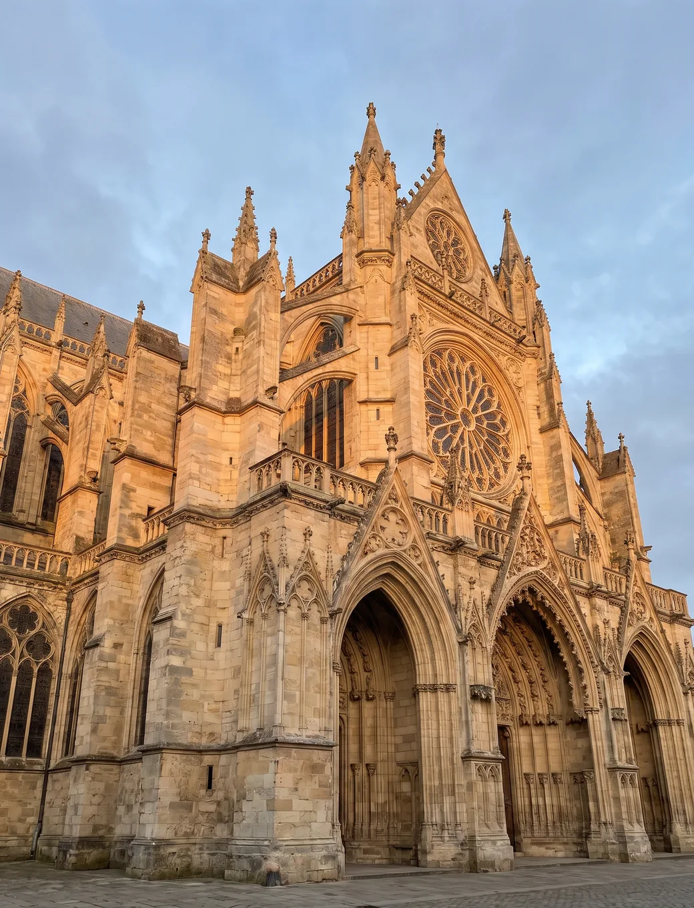
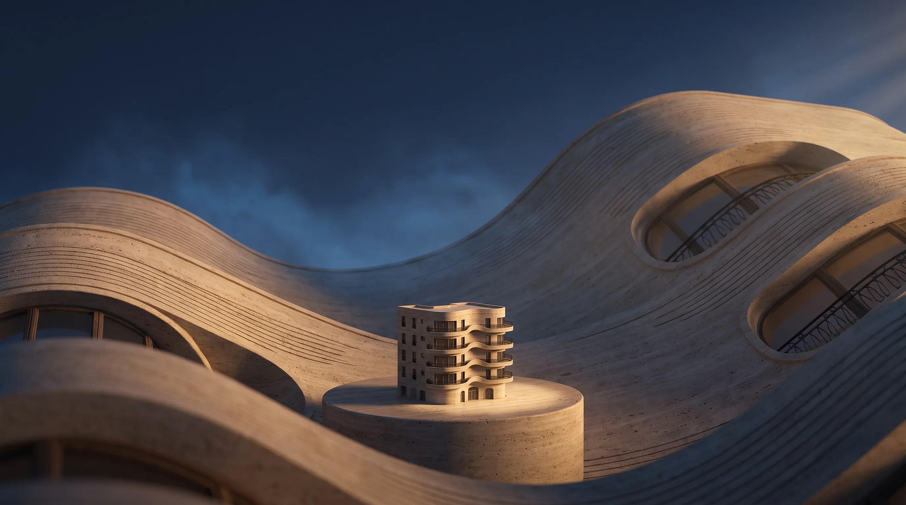
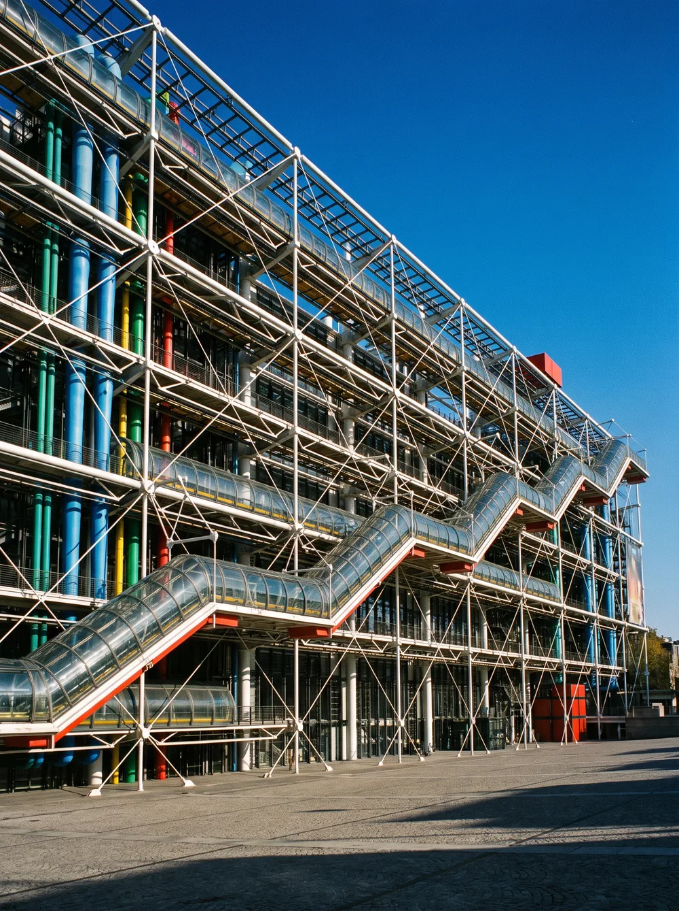
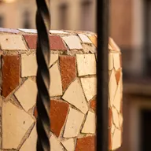
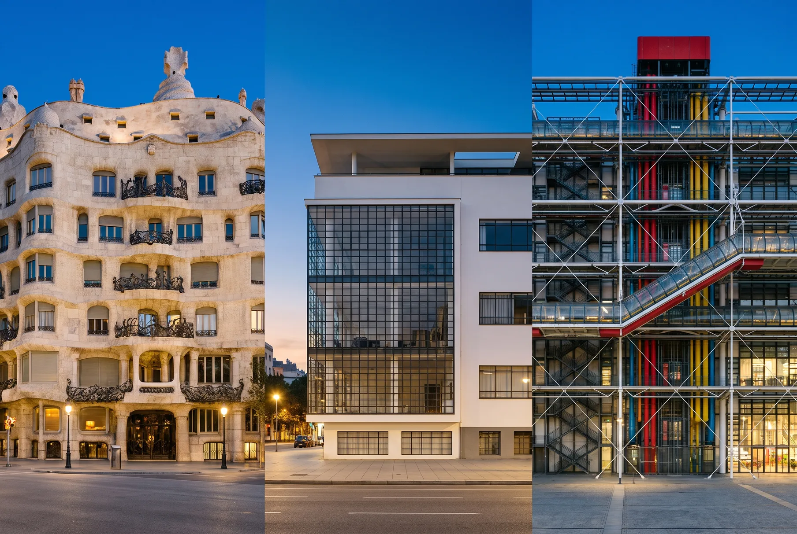
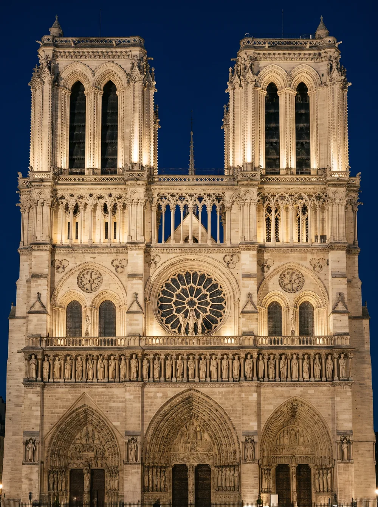
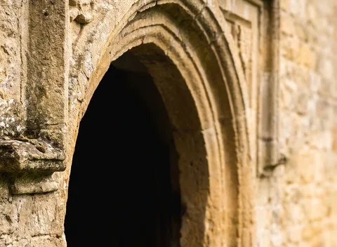
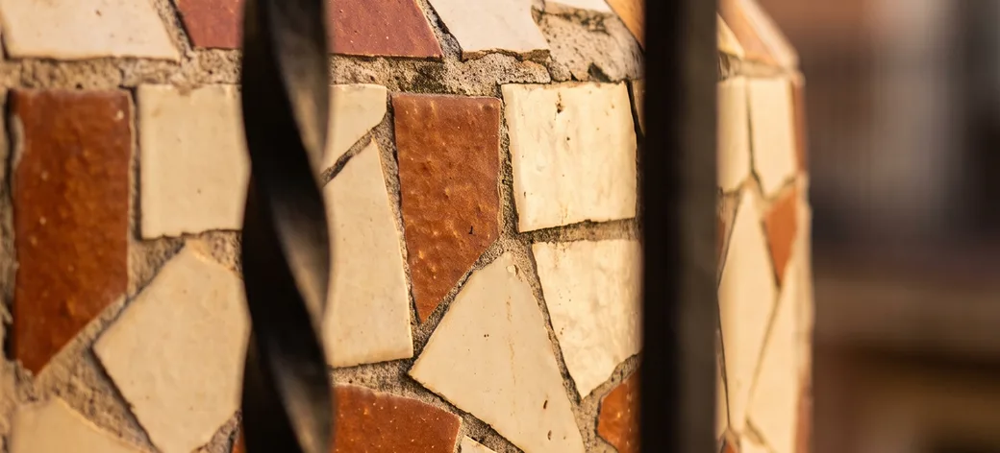
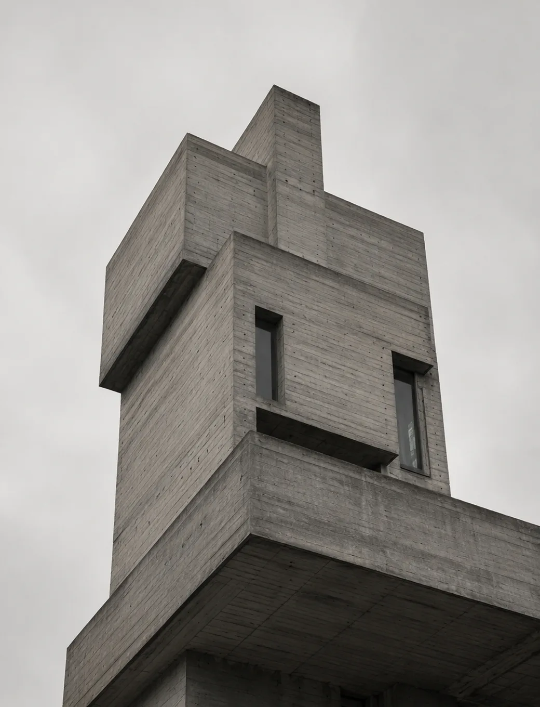
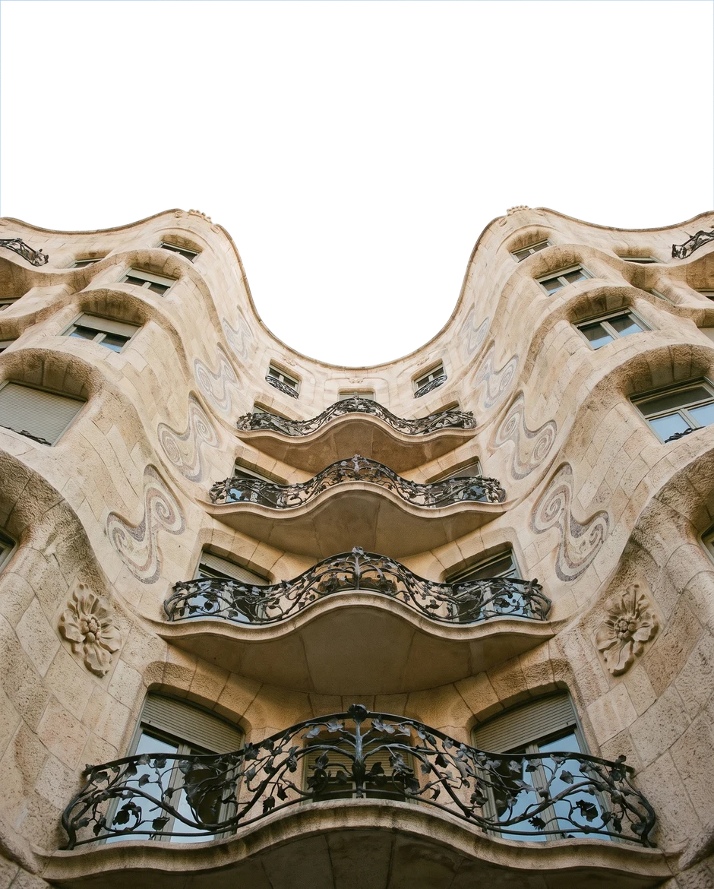

Rose window · 0.97
12th–16th century01 / 05
Gothic
Pointed arch · Rose window · Tracery

ARCA recognises buildings through your camera — architect, year, style — and turns any city into a route you can walk.
ARCA is a field guide to the street you are standing on. Point your camera at any facade and it names the architect, the year and the style — then finds the next building worth the walk.

Trencadís
A demo street stitched from Barcelona, Dessau and Paris. Tap a hotspot: ARCA frames the facade and returns what an architect would tell you.
Tap a hotspot


Most apps match your photo against other photos. ARCA splits a facade into the parts an architect would name — arch profile, window rhythm, cornice, material — and reasons from those. So every answer comes with its evidence.

Pointed arch · Rose window · Tracery

Whiplash curve · Wrought iron · Trencadís
Curtain wall · Flat roof · Ribbon windows

Béton brut · Board-marked concrete · Cantilevers
Exposed services · Steel frame · Ducts as facade
Routes are built from what you scan and what the city is known for. Every stop opens with the facade already in frame, so you know exactly where to stand.

Start with the building across the street. Every scan lands in your own atlas — sorted by architect, era and style.